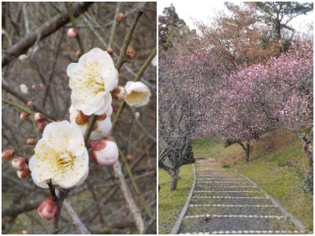
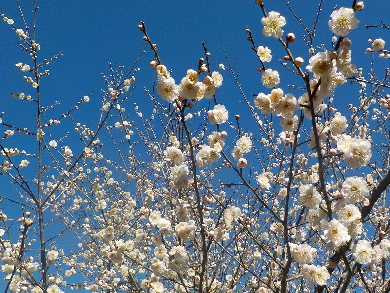
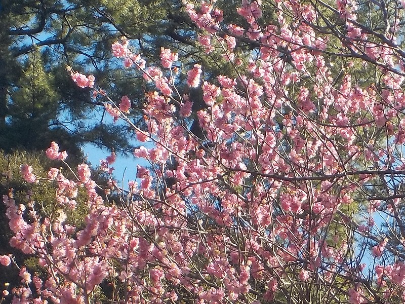
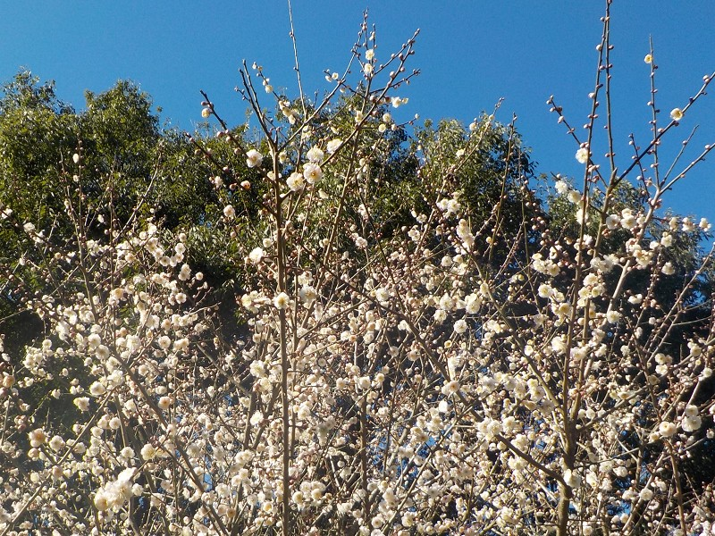
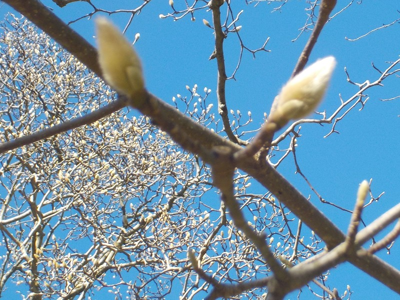

島根県出雲市斐川町直江3864-2
更新日 : 2026/02/14

梅は咲いていたんですが花数が少なかったので、いい花を求めてあちこち見て回りました。
山でアップダウンがあるので、体力を使いました。もうちょっと普段から歩いた方がいいかなと思いました。
天気のいい日はあちこちの公園を歩こうかな。
更新日 : 2024/02/17

今日は天気がよく暖かかったので最強な花見日和でした。

梅の種類が色々あり全部が満開ではないですが、そのぶん花の期間が長くなるのでいいですね。たぶんしばらくの間見頃だと思います。

来週も快晴だったら梅を見に行きたいと思いました。

梅の次は木蓮の花を見に行きたいです。
【おいしいものを食べよう。】【たくさん寝よう。】
【ソロ活をしよう!】【季節感のあることをしよう。】【動画視聴はほどほどに。】【当サイトの全てのコンテンツは無断転載禁止です。】